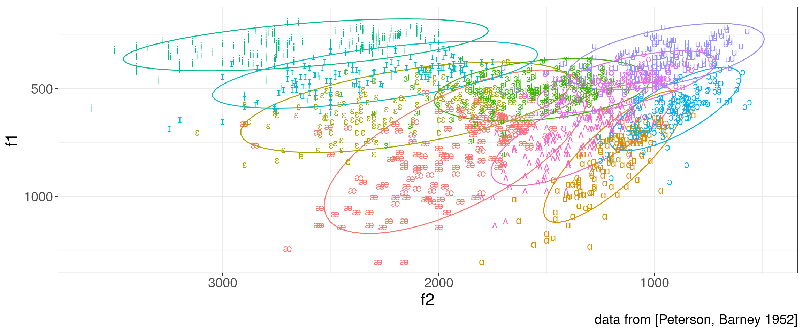

3 Vowels
3.1 Theory
3.1.1 Recap
- Sound waves can be described as
\[ s(t) = A \times \cos(2\pi ft + \phi) \]
A — amplitude;
f — is the fundamental frequency;
φ — phase;
t — time.
Speech sounds are complex waves
Fourier transform — allows to extract components of the complex wave

3.1.2 How shape of the vocal tract influences on vowels? Tube model.
Historically, height and backness are impressionistic linguistic terms:

But we are intersted just in a cardinal points:

If we analyze acoustics we can get something like this:

| i | a | u | |
|---|---|---|---|
| F1 | 300 | 700 | 300 |
| F2 | 2300 | 1400 | 800 |
However, if we analyze real sounds it could be messy:

Tube model, after (Fant 1960): vocal tract is a tube or a set of tubes:

3.1.3 Wavelength

\[c = \frac{\lambda}{T} = \lambda\times f \approx 33400\text{ cm/s}\]
- c — speed of sound;
- λ — wavelength;
- f — sound frequency;
- T — period.
Neutral vocal tract in the position for the vowel ə:
Resonance is a phenomenon in which a vibrating system or external force drives another system to oscillate with greater amplitude at specific frequencies. The lowest natural frequency at which such a tube resonates will have a wavelength (λ) four times the length of the tube (L).
\[c = \frac{\lambda}{T} = \lambda\times f \approx 33400\text{ cm/s}\]
The tube also resonates at odd multiples of that frequency.
\[F_1 = \frac{c}{\lambda} = \frac{c}{4 \times L} \approx 500 \text{ Hz}\] \[F_2 = \frac{c}{\lambda} = \frac{c}{\frac{4}{3} \times L} = \frac{3 \times c}{4 L} \approx 1500 \text{ Hz}\] \[F_3 = \frac{c}{\lambda} = \frac{c}{\frac{4}{5} \times L} = \frac{5 \times c}{4 L} \approx 2500 \text{ Hz}\] \[F_n = \frac{c}{\lambda} = \frac{c}{\frac{4}{n} \times L} = \frac{n \times c}{4 L} \approx n \times 500 \text{ Hz}\]
Something like this we can expect from animals:

When there is a constriction, back tube and constriction form Helmholtz resonator.
\[f = \frac{c}{2\pi} \times \sqrt{\frac{A}{V\times L}}\]
- A — the area of the neck;
- L — length of the tube;
- V — volume of the air in the body.

3.1.4 Other models
- Perturbation Theory [Kajiyama 1941, Mrayati et al. 1988]
- Quantal Theory (Stevens 1972)
- Theory of adaptive dispersion (Lindblom and Maddieson 1988)
3.2 Vowel formants’ normalization
This section is based on (Adank 2003). However, see the more detailed overview in (Flynn 2011).
There are three possible sources of variation in vowel formants measurements (Ladefoged and Broadbent 1957; Pols, Tromp, and Plomp 1973: 1095; Adank 2003):
- acoustic variation;
- speaker variation;
- sociolinguistic;
- anatomical/physiological variation;
- and measurement error (“residual variance” in (Pols, Tromp, and Plomp 1973)).
There are a lot of researchers aimed to reduce speaker-related variation using acoustic vowel normalization (e. g. (Gerstman 1968; Lobanov 1971; Syrdal and Gopal 1986)). However there are some researches that afraid that normalization procedures can reduce interesting for the linguistics information like sociolinguistic/dialectal signal in data (Hindle 1978; Disner 1980; Thomas 2002, 174–75).
Human listeners deal seemingly effortlessly with all three possible sources of variation, but the dataset from (Peterson and Barney 1952) shows extrordinary variation:

3.2.1 Acoustic vowel normalization procedures
There are several classes of vowel normalization procedures:
- formant-based procedures (Gerstman 1968; Lobanov 1971; Fant 1975; Syrdal and Gopal 1986; Miller 1989);
- whole-spectrum procedures (Klein, Plomp, and Pols 1970; Pols, Tromp, and Plomp 1973; Bladon and Lindblom 1981; Bladon 1982; Klatt 1982);
- Neural networks (D. J. M. Weenink 1993; D. Weenink 1997).
Formant-based procedures are the most compact (just 2- or 3-dimensional represetations) and comparable crosslinguisticaly.
In (Adank 2003) author compared 11 methods of vowel normalization:
| abb | method | |
|---|---|---|
| 1 | HZ | the baseline condition, formants in Hz |
| 2 | LOG | a log-transformation of the frequency scale |
| 3 | BARK | a bark-transformation of the frequency scale |
| 4 | MEL | a mel-transformation of the frequency scale |
| 5 | ERB | an ERB-transformation of the frequency scale |
| 6 | GERSTMAN | Gerstman’s (1968) range normalization |
| 7 | LOBANOV | Lobanov’s (1971) z-score transformation |
| 8 | NORDSTRÖM & LINDBLOM | Nordström & Lindblom’s (1975) vocal-tract scaling |
| 9 | CLIH i4 | Nearey’s (1978) individual log-mean procedure |
| 10 | CLIH s4 | Nearey’s (1978) shared log-mean procedure |
| 11 | SYRDAL & GOPAL | Syrdal & Gopal’s (1986) bark-distance model |
| 12 | MILLER | Miller’s (1989) formant-ratio model |
3.2.2 (Lobanov 1971) z-score transformation
The idea behind the Lobanov’s method is simple z-normalization. Imagine some random distribution:

If we apply the folowing normalization, the distribution form will be the same, however the scale will be unified with mean = 0 and standard deviation = 1:
\[x_{normalized} = \frac{x-\mu}{\sigma}\]

library(phonTools)
data(pb52)
pb52 %>%
group_by(speaker) %>%
mutate(vowel = ipa::convert_phonetics(vowel, from = "xsampa", to = "ipa"),
scaled_f1 = scale(f1),
scaled_f2 = scale(f2)) %>%
ggplot(aes(scaled_f2, scaled_f1, label = vowel, color = vowel))+
stat_ellipse()+
geom_text()+
scale_x_reverse()+
scale_y_reverse()You can find implementation of other methods in R package vowels.
Try to normalize and visualize data from the dataset Hillenbrand et al. (1995), stored in h95 variable in the package phonTools.
Sometimes it make sense to get back to the formant values:
pb52 %>%
mutate(overall_mean_f1 = mean(f1),
overall_sd_f1 = sd(f1),
overall_mean_f2 = mean(f2),
overall_sd_f2 = sd(f2)) %>%
group_by(speaker) %>%
mutate(vowel = ipa::convert_phonetics(vowel, from = "xsampa", to = "ipa"),
sclaed_f1 = scale(f1),
sclaed_f2 = scale(f2),
restored_f1 = sclaed_f1*overall_sd_f1+overall_mean_f1,
restored_f2 = sclaed_f2*overall_sd_f2+overall_mean_f2) %>%
ggplot(aes(restored_f2, restored_f1, label = vowel, color = vowel))+
stat_ellipse()+
geom_text()+
scale_x_reverse()+
scale_y_reverse()3.2.3 vowels package
You can find implementation of other methods in R package vowels:
library(vowels)
data(ohiovowels)
vowelplot(norm.lobanov(ohiovowels), color="vowels", label="vowels")vowelplot(norm.labov(ohiovowels), color="vowels", label="vowels")vowelplot(norm.nearey(ohiovowels), color="vowels", label="vowels")vowelplot(norm.wattfabricius(ohiovowels), color="vowels", label="vowels")